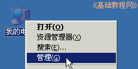
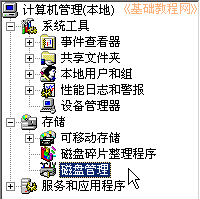
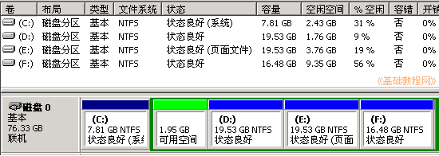
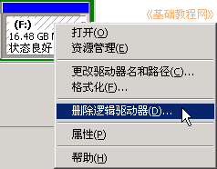
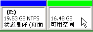
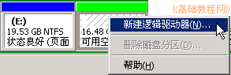
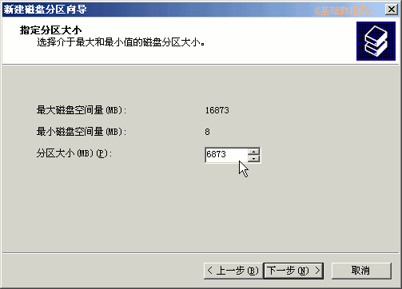
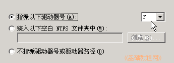
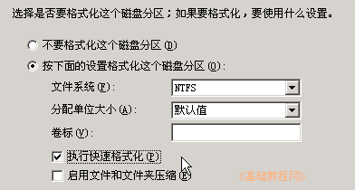
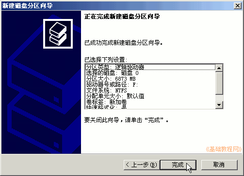

Ubuntu 安装基础教程
作者：Teliute 来源：基础教程网
三、分区操作 返回目录 下一课准备好分区后，这一节我们来学习分区的相关操作，为Ubuntu提供一个10G大小的磁盘空间，操作中注意细心，下面我们来看一个练 习；
1、磁盘管理
1）在桌面上找到“我的电脑”图标，瞄准点 右键，在出来的菜单里，选择“管理”命令；

2） 在出来的计算机管理中，找到左边栏里的“存储－磁盘管理”，点击进入；

3） 这时右边的窗口中出来磁盘的分区以及使用情况，各种分区 的颜色不同，绿色是未使用的；
4） 看一下磁盘的盘符字母和容量大小，确定最后的(F:)、16.48GB是我们要用的分区，
瞄准这个分区点右键，在出来的菜单里，选择“删除逻辑驱动器”命 令，在出来的确认对话框里点“是”，这儿一定要细 心；

5） 然后这个分区变成绿色，表示未被使用；

6） 如果提示错误，看看是否打开了其他程序或窗口，也可以启 动到安全模式下操作；
2、创建一个分区(可选)
1）如果最后这个分区容量太大，或者想再新建一 个分区，可以在绿色分区上点右键，选择“新建逻辑驱动器”命令；

2） 在出来的新建面板中点“下一步”，第二个里选“逻辑分区”，在第三步磁盘大小时输入大小，至少要保留10G左右的空间；

注：1G＝1024MB，这儿的分区大小是用MB做单位，检查无误后 点“下一步”继续；
3）接下来的指派驱动器号用默认的即可，点“下一步”继 续；

4） 接下来的格式化面板中，删掉卷标里的“新加卷”，打勾“执行快速格式化”，其他的可以用默认，点“下一步”继续；

5） 然后出来“完成”面板，检查无误后， 点“完成”；

6） 还剩下的10G左右先放着，等安装Ubuntu时，由安装程序进行分区；
本节学习了在WinXP中删除和新建分区的基本方法，如果你成功地完成了练习，请继续学习下一课内容；本教程由86团学校TeliuTe制作|著作权所有
基础教程网：http://teliute.org/
美丽的校园……
转载和引用本站内容，请保留版权信息和本站链接。